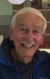

|
I knew about Dave Douglass when I was studying corrosion as an engineering student. Dave was a "king" of high temperature oxidation served as the editor of an international renowned science journal Oxidation of Metals. I was extremely fortunate, later in my student years, to have him as my graduate advisor at UCLA. Dave was an excellent advisor, teacher, and a tall figure for all students in the Materials Science Department. He even had several "advanced" students very close to his own age and advised them on thesis and perhaps on life as well. The days at UCLA was excising, fun, and very fulfilling. In 1989, China had the Tiananmen Square student movement, and Dave's lab became a "zoo". UCLA students came to the lab discussing about donations, LA Times reporter asked for interviews, and AT&T called the lab to set up a fundraising hotline to support the student movement. Dave patiently answered the phone calls and looked us up in the Boelter Hall. After 1989, he brought Yirong from Beijing to the lab and she became his student. Only after I left UCLA, I began to realize how really lucky I was at UCLA and in Dave's group. I started to hear stories that PhD students elsewhere worked years on their thesis before their could graduate; some even became "professional students" after they spent too long a time in graduate schools. In contrast, at the very first moment Dave introduced us the fascinating field of high temperature oxidation, we were encouraged to publish what we learned from Dave and the results of our experiments in Dave's lab. With Dave as the editor of Oxidation of Meals, it definitely helped. After only three years in the lab and several papers published, Dave told me that I was ready for the prestigious degree from UCLA. After working in the industry and also served as a reviewer for several engineering journals, I learned how tedious a science journal editor can be and how extraordinary Dave was. A science journal editor is a thankless job. It requires a tremendous determineation to make things happen and keep them going. Before Dave started the journal of Oxidation of Metals, the so called high temperature oxidation community did not have a dedicated forum to exchange research advancements in the field. Largely, the papers were scattered across several different science journals. With Dave's diligent nurture and care, today the high temperature oxidation community has grown and arguably single handly made today's engineering marvels possible such as green power generation, automotive, military and civil aircrafts, space launch vehicles, space exploration and the semiconductor industry where growing oxide on a silicon wafer is a complicated science. Today, we travel from all over the country and come together to celebrate Dave's life. From the moment when we started an automotive engine, boarded an airplane, talked with family and friends using smart phones, we are benefited greatly from Dave's scientific and editorial effort through his life to allow the science to make our lives better every day. Thank you, Dave! |  |